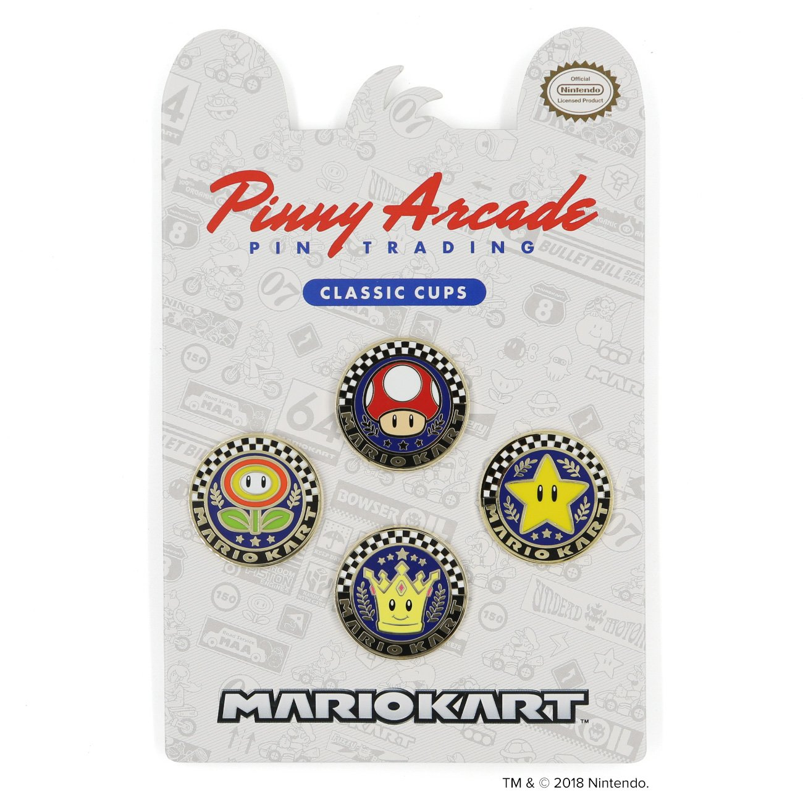

Pinny Arcade - Mario Kart

For whatever reason, I've always thought of Pinny Arcade as an event/thing only happening at PAX, which I'm highly unlikely to ever attend. Little did I know, they sell pins all the time. I could spend too much money right now on pins that will likely only ever end up in a little box for me to fawn over later.
Previously: Create a Retro Long Shadow Text Effect in Illustrator Next: Mandy Barker - Penalty